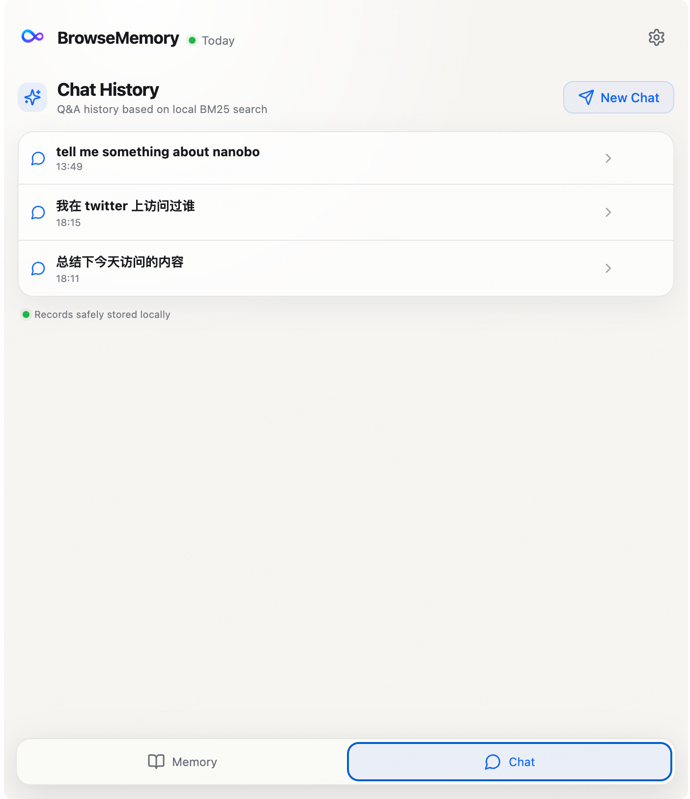
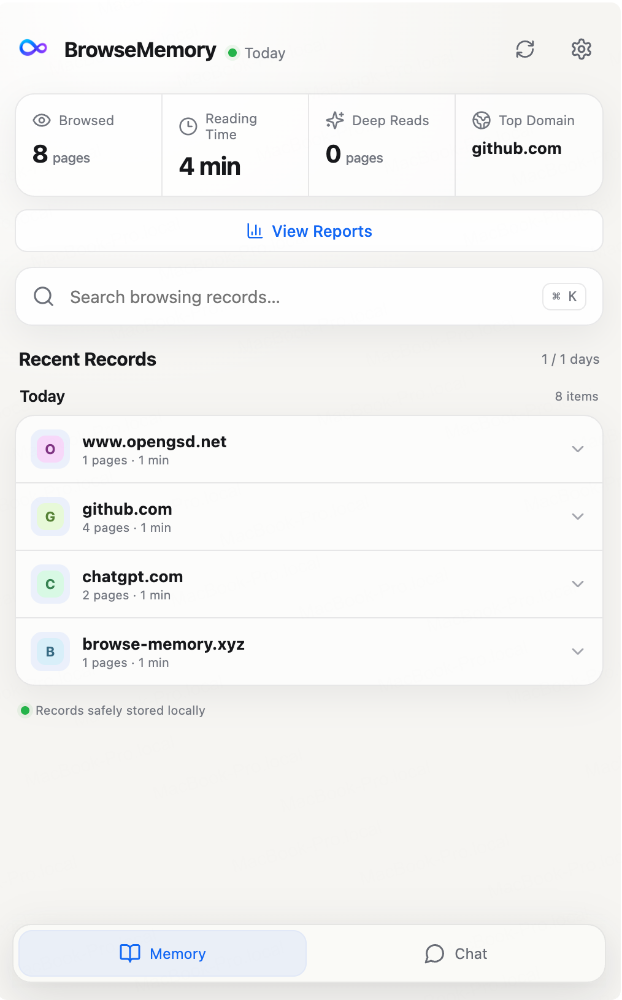
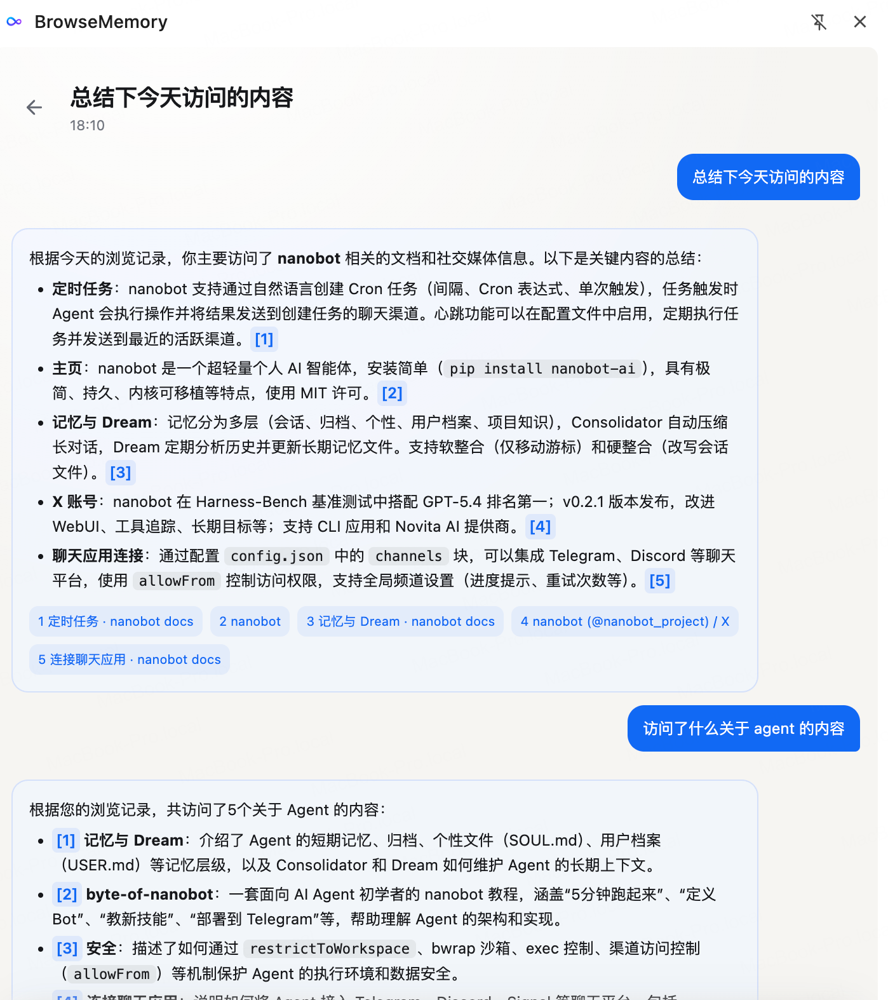
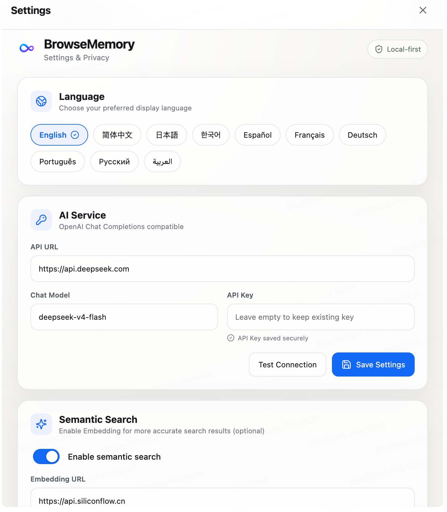
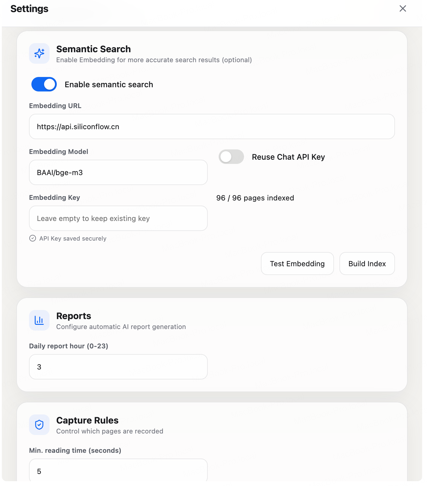
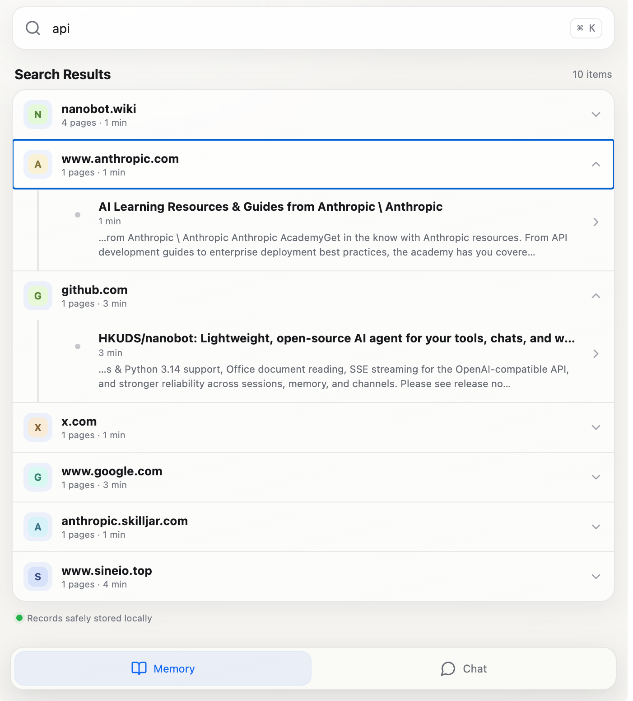
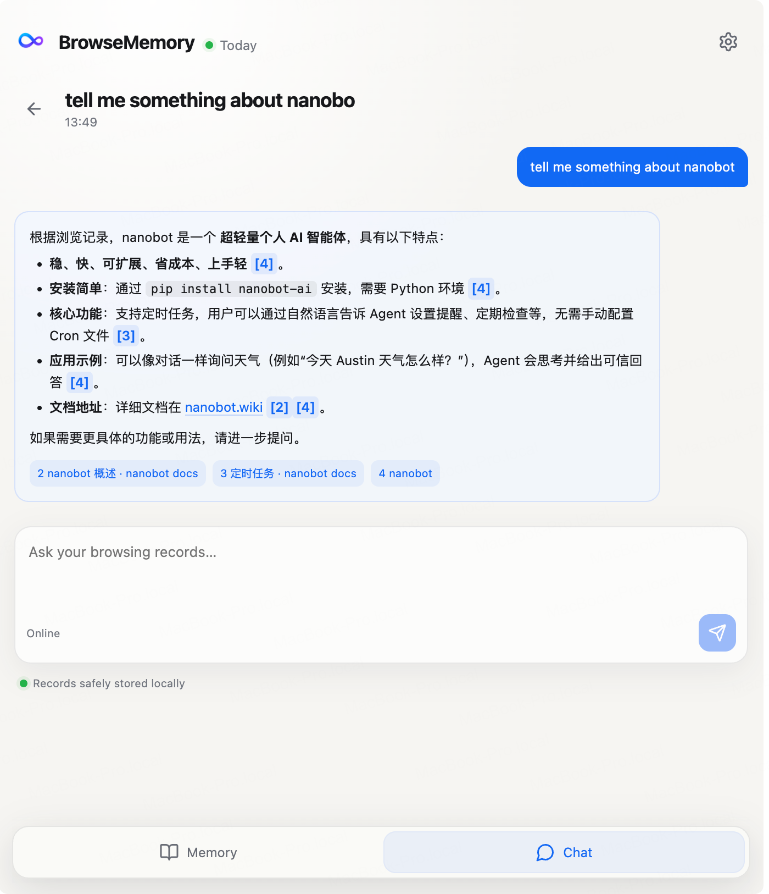
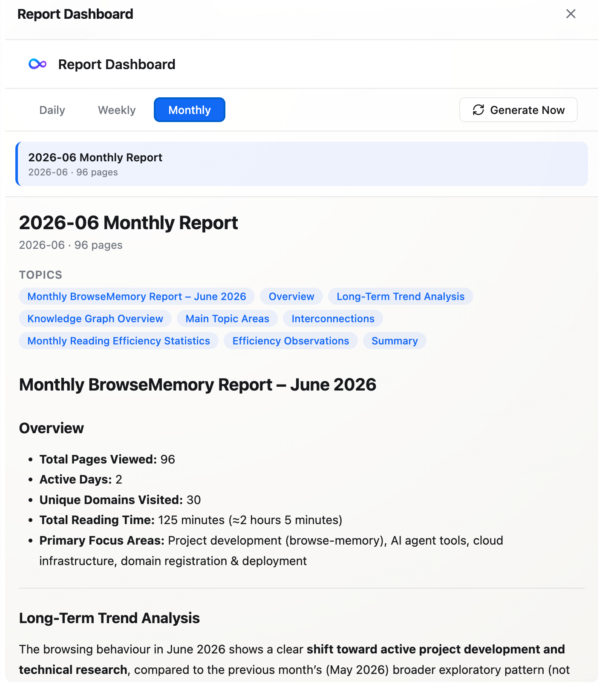

01
Capture without the ceremony
Meaningful reading sessions are saved automatically with page content, duration, date, and domain. Incognito pages stay out by default.

BrowseMemory quietly captures what you read, helps you find it again, and turns your browsing history into sourced answers and useful reports.
Free and open source. Search and capture work without an AI key.
No folders to maintain. No manual bookmarking habit to build. Open the side panel whenever you need to search, ask, or reflect.

The real product
Every image below is captured from the working BrowseMemory extension.



Remember more. Search less.
Meaningful reading sessions are saved automatically with page content, duration, date, and domain. Incognito pages stay out by default.

Built-in BM25 search stays fast and useful without a network connection. Optional semantic search adds meaning-aware retrieval.

Chat across your saved pages and follow citations back to the original sources. Multi-turn rewriting keeps follow-up questions grounded.

Generate daily, weekly, and monthly reports with topic clusters, reading totals, and highlights from your own browsing.

Local by default
Pages, indexes, reports, and settings live in the extension's IndexedDB. BrowseMemory does not request access to browser history, cookies, or network traffic.
Read the privacy detailsFrom browsing to insight
Read the web as usual. Eligible pages are captured after a meaningful visit.
Search by keyword, browse by domain, or ask a question in natural language.
Use citations and reports to recover context, revisit ideas, and spot patterns.
Install the open-source extension and start building a private, searchable record of what you read.